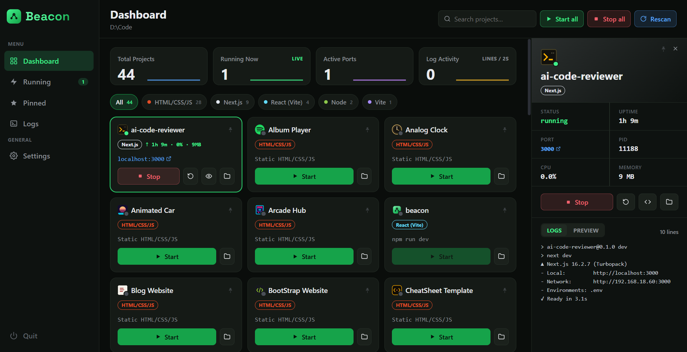

Every dev server.
One dashboard.
Zero terminal tabs.
Point Beacon at a folder full of side projects. It finds every one of them, launches the right dev server with the right package manager, and keeps a live view of logs, ports, and resource usage.
Free and open source. MIT licensed. Built with Tauri, so it stays out of your way.
From folder to running app in four steps
No config files to write, no scripts to memorize. Beacon figures out what it is looking at.
Point at a folder
Pick the folder where your side projects live. Beacon remembers it for next time.
Auto-discovery scans
It walks the tree, skips node_modules and build output, and detects the framework each project uses.
One click to start
Beacon launches each project with the package manager it actually uses. No guessing, no typos.
Live dashboard
Logs stream in, ports auto-detect, and CPU and memory update while you keep working.
Everything a dev-server manager should do
Built for people who run more side projects than they can keep track of in their head.
Auto-discovery
Recursively scans for Node and static projects, skipping node_modules, dist, build, and dotfolders along the way.
Framework detection
Recognizes Next.js, Vite, React, Express, and more, and labels every project the moment it is found.
Package-manager aware
Reads packageManager or the lockfile and starts each project with npm, pnpm, yarn, or bun, whichever it actually uses.
One-click control
Start, stop, and restart any dev server, with stdout and stderr streamed live to the dashboard.
Favicon everywhere
Pulls each project's real favicon, including inline data URIs and bundler-served assets.
Zero-config static server
Plain HTML, CSS, and JS projects get served instantly, with no build step and nothing to configure.
Live stats
Per-project CPU and memory usage, sampled efficiently instead of scanning the whole system.
Background and tray
Closing the window keeps servers running. Get a native notification if something crashes or a port collides.
The real dashboard, not a mockup
This is Beacon running 44 projects side by side, on an ordinary Windows machine.

Stop juggling terminal tabs
Beacon is free, open source, and built for a folder full of side projects that keeps growing.
MIT licensed. No account required. No telemetry.